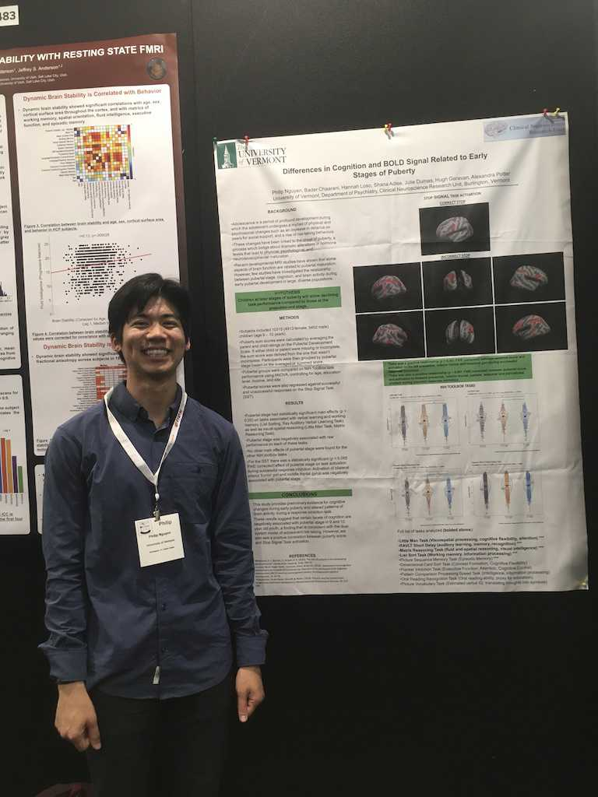
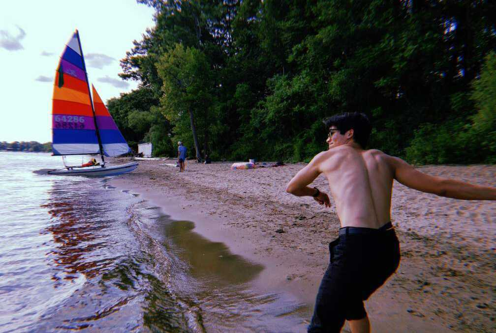

Rome
I recently went to Rome, and it was nothing short of stimulating, sensuous, and overwhelming. From the minimal use of ingredients in Italian cuisine to the incredible works of Michaelangelo and other Roman artists, everywhere you went, everything you touched, tasted and smelled, everything you experienced, it all seemed like some part of a grand plan aimed at steering one’s senses toward a deeper appreciation and understanding of beauty and aesthetics. The city was a living, breathing work of art, an astounding pillar of human ingenuity that left me wide-eyed and dumbstruck.
Oddly enough, it was there that for the first time I felt homesick while traveling. The feeling hit me when my friends and I began imagining what it’d be like to live in Rome. It didn’t take long for me to come to the conclusion that I much preferred the quiet and serene nature of Vermont. Rome, as one friend put it, was a zoo. It was loud, constricting, and touristy. Some people may enjoy this kind of environment, but I thrive in smaller cities and places with a more communal feeling. Rome also lacked the particular kind of wildness that I’ve come to love, find solace in, and be humbled by while living in the green mountain state.
Having a sense of home is a relatively new concept for me. What did it mean to miss home? Perhaps what I missed wasn’t Vermont, but rather the life that I’ve built over the past year and a half. The routines, the familiarity, going to Mag’s cafe to read, work, and write, walking up the Burlington bike path by Champlain lake. The verdancy and birdsong. The numerous dates and unrequited loves. My colleagues who double as my friends. All of this was home.
Upon closer introspection, I also realized I didn’t just miss home. I was plagued by restlessness, confusion, uneasiness, and I only had faint clues as to why. The inner home was showing signs of wear.
The Past Year
Step back a year and I was starting to work on the prerequisite coursework for UVM’s Complex Systems and Data Science graduate program. My original goal in pursuing this program was to continue working on the ABCD Study as a full-fledged researcher, but also to gain an in-demand set of technical skills in case my intentions changed.
As time progressed, it became clear to me that the reality of working in academia was significantly different from how I initially imagined it to be. In most cases academic researchers aren’t obligated to only their research. They also had to apply for grants, cater their papers to specific academic journals, navigate university politics, teach and mentor students, run their own lab, and relentlessly fight for tenure. Not that all of this is undesirable, but it makes the research seem secondary. Maybe it was all worth it for the opportunity to do science.
It seemed rational then to find out if I’d actually enjoy doing the research itself. I reached out to my PI and asked if I could work on a research project under her guidance, and she graciously granted me the opportunity.
Long story short, I didn’t enjoy it. I bemoaned the literature reviews, academic writing, and how little inherent feedback I received from the work. I never really knew if I was moving in the right direction, and what was deemed a discovery was less than thrilling to me.
Maybe I was missing the bigger picture, I thought. They weren’t merely hunting for p-values; they were asking and refining questions, proposing and testing hypotheses, defining and advancing science. My optimism was often revived when I reminded myself of this. But when it came to actually doing the work, my mind was resistant and someplace else. Perhaps I liked the idea of becoming a scientist more than actually being a scientist.
I trudged through and finished the project, but by semester’s end, my thoughts had grown cynical and indifferent as my curiosity and general enthusiasm for science waned. I was likely burning out at this point. In addition to the research project, I was still studying for calculus and statistics while also working full time on the study. A break was called for. Fortunately, the lab was headed to Rome.
OHBM
We went to Rome not just to travel, but to also attend the 2019 OHBM (Organization for Human Brain Mapping) conference. It was the perfect opportunity to gain some perspective on the field of neuroscience, and whether or not I would fit in.
I skipped most of the keynotes and lectures, partly out of disinterest, but mainly because I wanted to interact with the scientists themselves. I wanted to learn about their lives and what drove them into academia.
Coincidentally, I spent a lot of time with the graduate students and postdocs who were already in my lab. Beyond the scope of email, small talk, and the tasks I’d offered to help them with, we didn’t talk much or know each other well.
Like any other job, they said, being a scientist has its ups and downs. It’s true that the common perception of being a scientist consisted of long hours and an absolute dedication to one’s work. One anecdote involved a woman who was incredibly successful by academic standards, yet it was said that she hadn’t seen her young son in over three months. Apparently he had drawn her a picture and would only show it to her if she came home. I don’t know the full extent of their circumstances, but it seemed like a strange and disturbing cry for attention.
Thankfully, there were also scientists who seemed to lead rich and fulfilling lives outside of academia. Max and Shana, the two postdocs in my lab, said if they couldn’t be successful working an average of 45 hours per week, then academia just wasn’t worth it. They cared about other things too. Of course, they worked their asses off when they had to, but they also knew how to shift gears when needed. “Work hard, play hard” was their motto, which was nice to witness and be a part of in the various outings we had in Rome. It painted a different picture of what a scientist could be.
I presented my poster on the third day of the conference. I was a bit nervous because I knew there were some shortcomings in my methods, and the premise of my project was fairly basic, but it was good practice to show my work, and I received great feedback from kind postdocs and graduate students. Being a research assistant granted me license to embrace being an amateur. Afterwards, I spent the rest of my time in the city with my fellow RAs and occasionally alone, eating, reading, chatting, and writing. It felt good to be done with the project. There was a lot to think about. (Like when I would cut my atrociously long hair, the only experiment I could draw a conclusion from!)

Budapest
The last week of my trip was spent in the lovely Budapest, visiting a friend whom I hadn’t seen in two years. I had visited before, but it was during this second trip that I came to appreciate the city for what it offered.
In contrast to Rome, Budapest feels more open and European. The city coexisted with the natural scenery. Trolley tracks and bike paths lined the streets. The friendly but mind-your-own-business Eastern European persona was stark. It was a much needed escape from the Roman zoo.
I spent some time reading, writing, and hanging out with my beloved friend, but mostly I just looked. At the people. At buildings and at storefronts. At my mind and my thoughts.
One day an older couple from Israel noticed me doing this, “nothing”, outside a small cafe by the Hungarian National Museum, and we had a long and thoughtful conversation about it. It occurred to me that most people don’t really do this, just looking at things and seeing them as they are. The wife, a teacher at a Waldorf school, thought it was an incredibly important skill to teach her students in a world where attention is exploited for profit. I replied that it may not be the most exciting thing to do, “nothing”, but it provided fertile ground for creativity, serendipity, and reflections to grow, which actually makes it pretty fun. And sometimes a connection you didn’t see before may suddenly and sometimes wildly emerge.
Home
You can’t do everything in life, so you have to pick and choose what’s important to you, and unapologetically prune everything else out.
Scientists with balanced lives have their priorities in order. It’s perfectly fine to have science define the entirety of one’s life, so long as it was a deliberate decision. But this perched image of the heralded scientist can be misleading and harmful to those who want to work as a scientist, but find fulfillment and meaning in other things as well.
Walking yesterday down by Champlain Lake, I realized that I had been accompanied by an awful, dreadful feeling of existential angst for nearly every day over the past 3 months. In this state of mind, everything I tried or worked on that wasn’t related to “figuring it out” became a distraction. Something bad. Unproductive. A waste of time.
It was clear that something needed to change, both in environment and mindset, in priorities and values.
I don’t think I want to become a scientist anymore, at least in the conventional, academic sense.
What I do want is to be curious. For my brain to feel alert and turned on. For my days to be filled with a sense of wonder, vitality, awe, fascination, and astonishment. I want to “choose a soul that is alert and wide awake,” in the words of the writer Jedidiah Jenkins. This requires dismantling and redefining what work means to me. It requires reexamining the sort of life I want to live.
Looking forward, there are a few leads I’d like to follow. It’s gonna take some work. But life’s too short to compromise for anything else.
